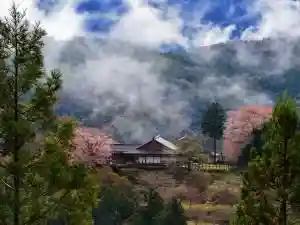

Tamine Chiku
Shitara, Aichi · 0536-64-5505 · Official / source link

Kyu Toyohashi Tetsudo Taguchi Sen
Shitara, Aichi · Official / source link
Okumikawa Kyodo Kan
Shitara, Aichi · 0536-62-1440 · Official / source link
Roadside Station Shitara
Shitara, Aichi · Official / source link
Shitara Oto Campground
Shitara, Aichi · 0536-65-0396 · Official / source link
Yakumo En Kiyosaki Mise
Shitara, Aichi · 0536-62-1600 · Official / source link
Toyokawa City Yagai Center Kirara Village
Shitara, Aichi · 0536-62-2555 · Official / source link
Oshidori Village
Shitara, Aichi · 0536-62-1000 · Official / source link
Tamine Kannon
Shitara, Aichi · 0536-64-5028 · Official / source link
Dan Ko Ura Tanihara Nama Hayashi (Kirara Forest)
Shitara, Aichi · 0536-62-1000 · Official / source link
Roadside Station (Tsugu Kogen Green Park)
Shitara, Aichi · 0536-83-2344 · Official / source link
Dan Ko Mizumi Ruafurai Kanri Tsuriba
Shitara, Aichi · 0536-62-1000 · Official / source link
Men no Ki Enchi (Tengu Tana)
Shitara, Aichi · Official / source link
Roadside Station (Agurisuteshon Nagura)
Shitara, Aichi · 0536-65-0888 · Official / source link
Tamine Shiro
Shitara, Aichi · 0536-64-5505 · Official / source link